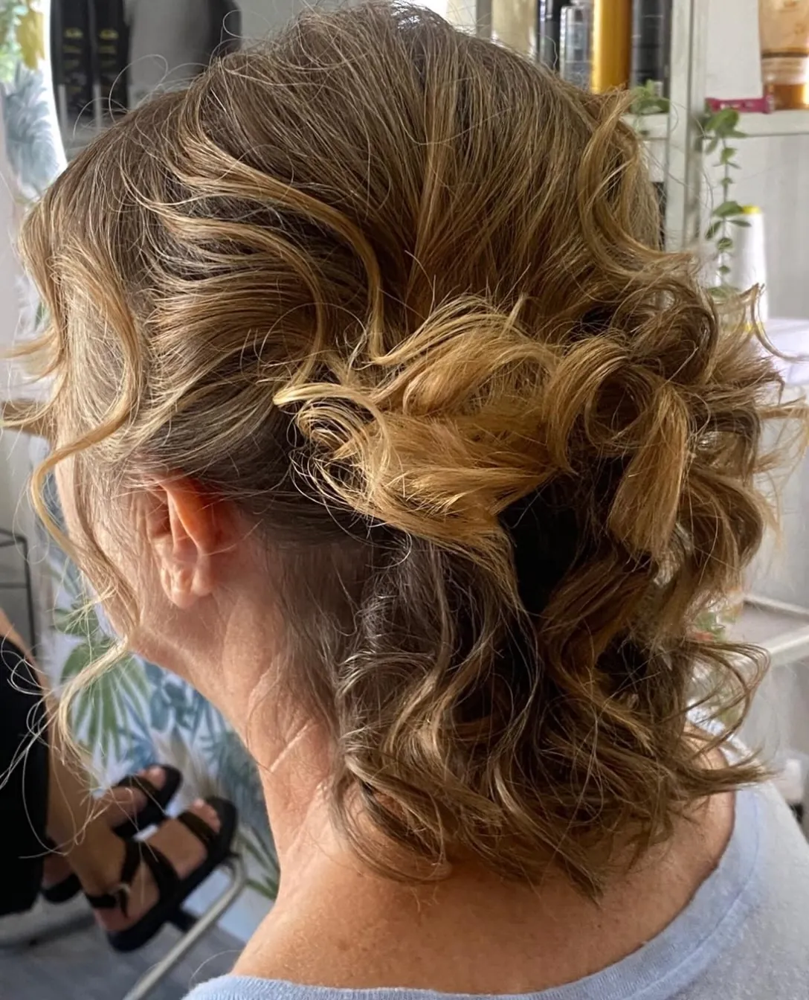
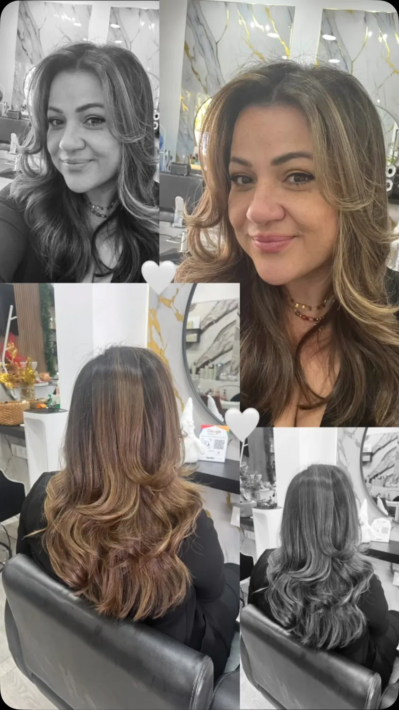

Color
Balayage, reflejos, rubios y cobres: los trabajos de color que el salón publica, con sus antes y después.
Cada cabello parte de un punto distinto: úsalo como inspiración, no como promesa de resultado.

El álbum AURA
Melenas con movimiento, recogidos que cuentan historias y pequeños detalles hechos con cariño. Aquí puedes mirar de cerca nuestro trabajo.

Elige por dónde empezar
Elige una categoría y salta directamente a sus fotos.
Balayage, reflejos, rubios y cobres: los trabajos de color que el salón publica, con sus antes y después.
Cada cabello parte de un punto distinto: úsalo como inspiración, no como promesa de resultado.

Lisos con brillo, ondas, semirrecogidos y cortes con carácter.
Mira cómo se mueve el pelo, no solo cómo queda de frente.

Recogidos con textura, torsiones y melenas sueltas para novias e invitadas.
Si te gusta alguno, guárdalo: lo llevamos a la prueba.

Manicuras, cuidado de manos y color para las uñas.
Esmaltes como OPI y Masglo vegano, entre otros.

El espacio, el equipo y los productos: madera, plantas y luz cálida.
Así es el sitio donde te esperamos.
Fotografías reales del salón
Pulsa una foto para verla de cerca y acceder a su publicación original.
Selección de fotografías publicadas por AURA en Instagram y en su ficha pública. El color puede variar según la luz y la pantalla.
Cómo leer estas fotos
Cuatro claves para que la inspiración sea útil.
Trabajos del salón, no imágenes de catálogo.
Cada foto enlaza a su publicación original.
Son mitades de la misma composición publicada por el salón.
El resultado depende de tu cabello de partida.


El cambio, a tu ritmo
Desliza para comparar trabajos reales publicados por el salón. Cada cabello parte de un punto distinto y por eso cada propuesta se valora de forma personal.
De ondas a un liso largo y brillante
Fotografías reales de AURA con ángulos e iluminación distintos. Los resultados dependen de cada cabello.
De la foto a tu pelo
Un camino sencillo desde la inspiración hasta la silla.
Elige dos o tres fotos que te gusten, de esta galería o tuyas.
Largo, color, movimiento… no solo en la foto entera.
Envíalas por WhatsApp al pedir cita.
Ajustamos la idea a tu cabello, tu rostro y tu rutina.
Síguenos
Cabello, manos, recogidos y el equipo que lo hace posible. Fotografías y reels publicados por el propio salón.

¡Y ahora le tocó a Anabel!Reel Momento peluquería: tu pelo no es uno másReel
Momento peluquería: tu pelo no es uno másReel Cuidarte, verte bien y apostar por la calidadReel
Cuidarte, verte bien y apostar por la calidadReelCifras de Instagram y Facebook consultadas el 20 de noviembre de 2026. Los enlaces se abren en cada red; esta web no carga sus contenidos ni rastreadores.
Hay un momento que es solo tuyo
Cuéntanos qué necesitas. Nosotras ponemos el tiempo, las manos y el cuidado.